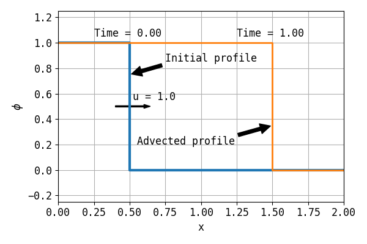

2.4.1. One Step 1D¶
2.4.1.1. Problem Description¶
The 1D gate profile has been initialized as:
(2.5)¶\[\begin{split}x &\in [0.0, 0.5] , \phi = 1, \\
x &\notin [0.5, 2.0], \phi = 0\end{split}\]
The velocity is \(u=1\) m/s. After 1 seconds (100 steps with \(\Delta t = 0.01\)), the final profile should be
(2.6)¶\[\begin{split}x \in [0.0, 1.5]&, \phi = 1, \\
else &, \phi = 0\end{split}\]

Fig. 2.37 Illustration of the problem.¶
2.4.1.2. Results¶
2.4.1.3. Case Information¶
Run time infomation:
Functions |
Wall Time (s) |
|---|---|
dt_cmake |
2.46618e+00 |
dt_make |
5.40029e+00 |
dt_run |
8.58321e-02 |
dt_plot |
4.14871e+01 |
File |
Creat Time |
Modified Time |
|---|---|---|
main.cpp |
20-01-04 20:36 |
20-01-04 20:36 |
CMakeLists.txt |
19-11-24 18:50 |
19-11-24 18:50 |
plot.py |
20-01-04 20:36 |
20-01-04 20:36 |
run.py |
20-01-04 20:37 |
20-01-04 20:37 |
report.rst |
20-01-04 20:37 |
20-01-04 20:37 |